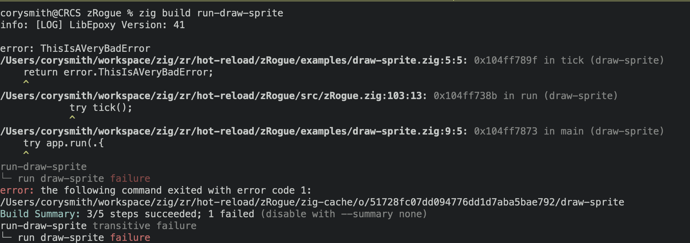

Now that we have a window up and running, we need to get some new stuff rendering. zRogue provides a method to draw ascii characters out of the box. This is done by defining what cell we want to draw with. As of now, the grid is always 80x50 cells that we can fill. Lets go ahead and try it out. We need first import the module from zRogue. This can be done with the following.
const app = @import("zRogue");
const run = app.run;
const s = app.Sprite;
Now with access to the sprite module, we need to set up some extra functions, that we will pass to our run function. zRogue has 4 seperate functions that users can define and then use as need be. This should be where all of our interactions live. They will always be called in this order.
| init | events | tick | cleanup |
Init happens before we start running our main loop. This will be where we will initial global state. This should only be used for initialization and not anything else. Running logic here happens before we even open a window, and because of that it will only run one time. Events in the part of our update loop where we will process user input. There is an Events interface that will give us access to check if keys are being pressed. Tick is our main render loop as well as if we need to run any logic each frame. Lastly cleanup is where we will free our memory. We are going to start with just the tick function first. Lets go ahead and make a function.
pub fn tick() !void {
}
Several important things to remember. This function takes no parameters, and it must be made public in order to zRogue to make use of it. The exclamation before the void denotes that this function can throw an error. here is one of Zig's superpowers in my opinion. Errors as values are amazing. This can be viewed as This function either returns an anyerror, or it will return nothing. This gives us a lot of help when debugging. Lets start by writing an error to see what would happen.
pub fn tick() !void {
return error.ThisIsAVeryBadError;
}
When we run this code we get the following output.
We can see the error it throws in the error that we wrote. That is awesome! We get to defined what exactly will happen if an error occurs. That to me is the best version of error handling. The stack also unwraps and will show us where the error occured, so we can go to the line of code quickly to debug.
Moving onto our next section, we can delete that error, and go ahead and draw a sprite. The sprite module we added earlier provides a draw sprite function we can call. Here is a snippet of code how we would draw something. The function takes several parameters. The x and y positions we want. It is important to note, (0,0) is the top left section of the screen. Then we have the foreground color, as well as the background color. zRogue provides colors for us, but if you want to use your own color, you can as well!
pub fn tick() !void {
// X Y Front Back Ascii Character
// | | | | |
// V V V V V
s.drawSprite(10, 10, s.TEAL, s.BLACK, '@');
// With Customer colors
s.drawSprite(
20,
10,
.{ .r = 1.0, .g = 0.2, .b = 0.4},
.{ .r = 1.0, .g = 1.0, .b = 1.0},
'@',
);
}
All the colors are a 0-1 float. You must define red green and blue for the colors. Now we need to make sure run gets this function. In our main function lets all the following:
pub fn main() !void {
try app.run(.{
.title = "Draw Sprite"
.tick = tick,
});
}
That's pretty awesome! The next step is to have one of these sprites be a player and make it so we can move. We will create a player struct that we will use to store position as well as colors for our sprite. We can do this at the top of the file. We will write the following.
const Player = struct {
x: i32,
y: i32,
foreground_color: s.Color,
background_color: s.Color,
sprite: u8,
};
var player: Player = undefined;
pub fn init() !void {
player = .{
.x = 10,
.y = 10,
.foreground_color = s.TEAL,
.background_color = s.BLACK,
.sprite = '@',
};
}
.{} to populate the fields of that type. We then use the . to access the members of the struct. We must initialize all the fields, but at the end we have a player data type. One other thing is the char datatype is simply a u8. It is used to look up ascii characters for strings. This is slightly different than what we may find in other languages. We can now use it to draw code. Lets go back to our tick function and use the player data instead of the arbitrary data.
pub fn tick() !void {
s.drawSprite(player.x, player.y, player.foreground_color,
player.background, player.sprite);
}
pub fn events(event: *app.Event) !void {
}
pub fn events(event: *app.Event) !void {
if (event.isKeyDown(app.KEY_A)) {
player.x -= 1;
}
if (event.isKeyDown(app.KEY_D)) {
player.x += 1;
}
if (event.isKeyDown(app.KEY_W)) {
player.y -= 1;
}
if (event.isKeyDown(app.KEY_S)) {
player.y += 1;
}
}